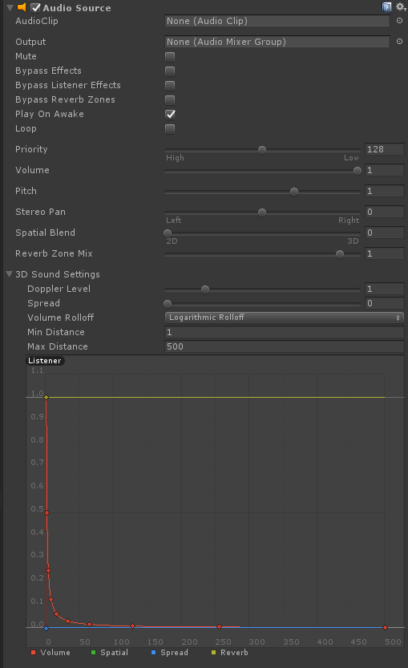
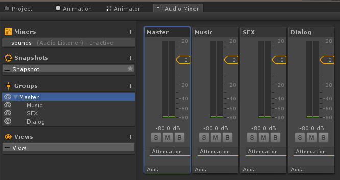

<link rel="stylesheet" href="../Highlightjs/styles/vs2015.css">
<script src="../Highlightjs/highlight.pack.js"></script>
<script>hljs.initHighlightingOnLoad();</script>
<html lang="en">
    <md-tabs md-dynamic-height md-border-bottom md-stretch-tabs>
        <h1>Audio</h1>
        <p>Adding audio to your game/application in Unity is very simple.</p>
        <md-tab label="Listener">
            <md-content class="md-padding">
                <h1 class="md-display-1">Audio Listener</h1>
                <p>Audio Listener is the component in unity that gives a GameObject the ability to listen to all sounds.<br>There must be only one such object in the scene.<br>It is a good practice to put the audio listener on the active camera where the user sees, since that provides a more realistic feeling. For example, in a third person game, the listener is on the camera instead of the character.<br>Unity automatically adds an Audio Listener component to the main camera (can be removed).</p>
            </md-content>
        </md-tab>
        <md-tab label="AudioSource">
            <md-content class="md-padding">
                <h1 class="md-display-1">Audio Source</h1>
                <p>Audio Source is the component that allows a GameObject to play a sound. It has options for making the sound loop, 3D, Stereo etc.<br>There can be many objects that contain an audio source in the scene that play at the same time.<center><br>The audio source component</center></p>
            </md-content>
        </md-tab>
        <md-tab label="AudioMixer">
            <md-content class="md-padding">
                <h1 class="md-display-1">Audio Mixer</h1>
                <p>An audio mixer helps organize and control your sounds. In the audio source component you can select to which mixer it belongs, so that it is controlled (volume and effects) through that mixer group.<br>You can create an audio mixer by right-clicking on the project view.<br>Mixers also provide some effects that can dictate how sound behaves. For example, you can use the Duck effect to lower the music volume when dialog is playing.<center><br>The audio mixer view</center></p>
            </md-content>
        </md-tab>
        <md-tab label="AudioThirdParty">
            <md-content class="md-padding">
                <h1 class="md-display-1">Third party tools</h1>
                <p>Audio is a world of its own, in the same way that 3D Models, animations and textures are. Just like using Photoshop, 3ds Max, Maya etc, you can use third-party tools to not only create the sounds, but also manage how they are played in game.<br>An example thid-party tool that we use is <a href="https://www.audiokinetic.com/products/wwise/">Wwise</a>.</p>
            </md-content>
        </md-tab>
    </md-tabs>
</html>
